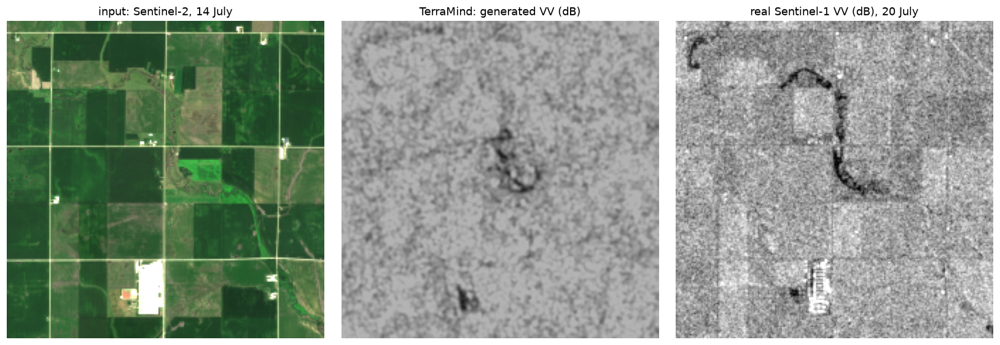

One Model for Many Sensors: DOFA, Panopticon, Copernicus-FM, CROMA and TerraMind
Most foundation models are tied to one sensor and one band layout. A newer family is built to read any of them: Sentinel-2, Landsat, Sentinel-1 radar, WorldView, hyperspectral cubes. This notebook uses three acquisitions of the same Iowa fields within six days in July 2025 (Sentinel-2, Landsat 8 and Sentinel-1) to test what that flexibility is worth: can one model embed all three, can a classifier trained on one sensor work on another, does location and date metadata help, does combining radar with optical survive clouds, and can a generative model invent the radar image from the optical one?
Overview
Why sensor-agnostic models
A conventional network has a fixed first layer: one set of weights per input band, in a fixed order. A new satellite, a different band set or a radar image needs a new model, or a hack such as copying weights between bands. Three ideas remove that limit:
Idea
How it works
Models
Wavelength-conditioned patch embedding
a small hypernetwork turns each band’s centre wavelength (and bandwidth) into that band’s first-layer weights
DOFA, Copernicus-FM
Spectral cross-attention
every band is a token tagged with its wavelength; attention merges any number of them
Panopticon
One encoder per modality, fused
separate optical and SAR encoders trained so that their embeddings of the same place agree
CROMA
Any-to-any tokens
every modality is tokenized; the model learns to predict any modality’s tokens from any other’s
TerraMind
Copernicus-FM also takes metadata: longitude, latitude, acquisition date and the area of the chip, encoded like extra tokens. TerraMind can generate a missing modality, for example a Sentinel-1 image from a Sentinel-2 image, which it calls “thinking in modalities”.
What flexibility does not give for free
A model that accepts Landsat bands has not necessarily learned that a Landsat pixel and a Sentinel-2 pixel of the same field should give the same embedding. Differences in resolution (30 m vs 20 m), band width and processing shift the inputs, and the embeddings shift with them. Cross-sensor transfer, training on one sensor and predicting on another, is the real test, and it is measured below against a simple band-value baseline.
Radar and clouds
Sentinel-1 sees through clouds; Sentinel-2 does not. CROMA’s joint embedding promises a representation that keeps working when the optical part is degraded. The test below covers half of the test chips with synthetic cloud and compares optical-only, SAR-only and joint embeddings.
Multi-Sensor Models with GeoLattice
Task
GeoLattice
any band set
fm.load_model("dofa-base", bands=...) or wavelengths=[...] in nm
Embed Sentinel-2, Landsat 8 and Sentinel-1 of the same fields with wavelength-aware models.
Measure cross-sensor transfer from Sentinel-2 to Landsat against a band-value baseline.
Test whether location and date metadata change Copernicus-FM embeddings.
Compare CROMA’s optical, SAR and joint embeddings, with and without simulated clouds.
Run TerraMind on two modalities and generate Sentinel-1 from Sentinel-2.
Embed an eight-band WorldView-2 image with explicit wavelengths.
Data
Dataset
Date
Content
Corn Belt Sentinel-2
14 July 2025
10 bands, 20 m
Corn Belt Landsat 8 OLI
15 July 2025
7 reflective bands, 30 m, resampled to the 20 m grid
Corn Belt Sentinel-1 GRD
20 July 2025
VV and VH backscatter in dB, 20 m
Cropland Data Layer
2025
six groups on the 20 m grid
WorldView-2, Bangladesh
8 bands (coastal to NIR2), 1.6 m
Contents
Setup
Three sensors, one week, one landscape
One model, three sensors
From Sentinel-2 to Landsat: cross-sensor transfer
Copernicus-FM: does metadata matter?
CROMA: optical, radar and both under clouds
TerraMind: two modalities in, one generated
An eight-band WorldView-2 image
Summary and exercises
Setup
Installation. This notebook needs installation option 6 (every GeoLattice module): pip install "geolattice[all]". See “Installation options” in the GeoLattice README. It also uses geolattice[rsense-foundation], which no GeoLattice option installs: pip install "geolattice[rsense-foundation]".
Code
import os # environment variablesos.environ.setdefault("USE_TF", "0") # keep transformers from loading TensorFlowimport time # timingimport warnings # warning controlwarnings.filterwarnings("ignore") # hide routine library warningsfrom pathlib import Path # file pathsimport matplotlib.pyplot as plt # figuresimport numpy as np # arraysimport pandas as pd # tablesimport rioxarray # noqa: F401 (registers the .rio accessor)import torch # PyTorch: every model runs on itimport xarray as xr # labelled rastersimport geolattice # GeoLatticeimport geolattice.rsense.foundation_models as fm # catalog, loaders, embeddings and probesplt.rcParams.update({"figure.dpi": 110}) # figure resolutionDATA = Path("../../../../Data/08_remote_sensing") # remote sensing data folderIC = DATA /"09_09_image_classification"# data shared with the image classification chapterCAP = DATA /"08_11_Capstones"# data shared with the capstonesOUT = Path("outputs") # results written by this notebookOUT.mkdir(exist_ok=True) # create it if neededDEVICE ="cuda"if torch.cuda.is_available() else"cpu"# run models on the GPU when there is oneSEED =0# one seed for every random stepnp.random.seed(SEED) # NumPytorch.manual_seed(SEED) # PyTorchprint("GeoLattice", geolattice.__version__, "| PyTorch", torch.__version__, "| device", DEVICE) # versions usedif DEVICE =="cuda": # name the GPUprint("GPU:", torch.cuda.get_device_name(0)) # GPU modelCUBE = IC /"Corn_belt"/"cache_20m"# Corn Belt cubes on the 20 m gridLANDSAT = IC /"Corn_belt"/"Landsat_9"/"2025_07_LC08_L2SP_027030_20250715_02_T1"# Landsat 8, 15 July 2025WV2 = IC /"WorldView2_BD"/"Images"/"multi.tif"# WorldView-2, 8 bandsCLASSES = ["Corn", "Soybeans", "Grass/pasture", "Developed", "Wetland/forest", "Other"] # CDL groups 0 to 5CHIP =32# chip size in 20 m pixels (640 m)
The Sentinel-2 and Sentinel-1 scenes come from the Corn Belt cubes. The Landsat 8 Collection 2 Level-2 bands are stored as digital numbers; reflectance is DN x 0.0000275 - 0.2. They are resampled to the Sentinel-2 grid with rio.reproject_match. Landsat’s NIR band (OLI band 5, 865 nm) corresponds to Sentinel-2 band 8A, so it is named nir08.
The two optical images agree in pattern; Landsat looks softer because it was resampled from 30 m. In the radar image corn fields (tall stalks, strong volume scattering) are brighter than soybeans.
Chips and labels follow notebook 09_11_03: 32 pixel (640 m) chips, the majority CDL class when it covers at least 60 % of the chip, corn and soybeans only, and 5.8 km blocks for spatial folds. The western half of the scene trains and the eastern half tests when a single split is needed.
Code
ny, nx =-(-cdl.shape[0] // CHIP), -(-cdl.shape[1] // CHIP) # chip gridpad = np.full((ny * CHIP, nx * CHIP), -1, cdl.dtype); pad[:cdl.shape[0], :cdl.shape[1]] = cdl.values # padded CDLblk = pad.reshape(ny, CHIP, nx, CHIP).transpose(0, 2, 1, 3).reshape(ny * nx, -1) # pixels per chipcounts = np.stack([(blk == k).sum(1) for k in (0, 1)], 1) # corn and soybean pixelsmajor, purity = counts.argmax(1), counts.max(1) / blk.shape[1] # majority and sharegy, gx = np.divmod(np.arange(ny * nx), nx) # chip row and columngroup = (gy //9) *10+ gx //9# spatial blocksok = purity >=0.6# pure corn or soybean chipswest, east = ok & (gx < nx //2), ok & (gx >= nx //2) # single split for transfer testsy = major # labelsprint(ok.sum(), "chips |", west.sum(), "west |", east.sum(), "east") # sizes
1449 chips | 736 west | 713 east
One model, three sensors
DOFA takes any optical band set through its wavelengths. Panopticon takes optical bands by wavelength and radar channels by special negative ids, so it alone reads all three sensors here. Each model embeds each sensor with its default per-band standardization; the probe is the spatial 5-fold linear probe of the previous notebooks, and the baseline is the chip mean of each band.
Code
SENSORS = {"Sentinel-2": s2, "Landsat 8": ls, "Sentinel-1": s1} # the three inputsemb, rows = {}, [] # embeddings and probe resultsflat =lambda m: m.values.reshape(m.sizes["embedding"], -1).T # (chips, D)for model in ["dofa-base", "panopticon"]: # wavelength-aware models enc = fm.load_model(model, device=DEVICE) # load oncefor sname, da in SENSORS.items(): # every sensorif model =="dofa-base"and sname =="Sentinel-1": # DOFA is used for optical bands herecontinue# skip radar enc.bands, enc.wavelengths =None, None# let embed_raster read this sensor's bands emb[(model, sname)] = flat(enc.embed_raster(da, chip_size=CHIP, norm="model", batch_size=64)) # (chips, D) rows.append({"input": model, "sensor": sname,"F1": fm.linear_probe(emb[(model, sname)][ok], y[ok], groups=group[ok])["mean"]["f1_macro"]}) # probedel enc; torch.cuda.empty_cache() if DEVICE =="cuda"elseNone# free memoryfor sname, da in SENSORS.items(): # band-mean baseline per sensor bm = np.nan_to_num(fm.chip_raster(da, chip_size=CHIP)[0].mean((2, 3))) # mean of every band per chip emb[("band means", sname)] = bm # keep it for transfer rows.append({"input": "band means", "sensor": sname, "F1": fm.linear_probe(bm[ok], y[ok], groups=group[ok])["mean"]["f1_macro"]}) # probepd.DataFrame(rows).pivot(index="input", columns="sensor", values="F1")[list(SENSORS)].round(3) # inputs x sensors
sensor
Sentinel-2
Landsat 8
Sentinel-1
input
band means
0.994
0.978
0.898
dofa-base
0.996
0.992
NaN
panopticon
0.998
0.993
0.923
In mid-July every optical input separates corn and soybeans almost perfectly, Sentinel-2 or Landsat, band means or embeddings: the crops differ strongly in the near and shortwave infrared at this time of year. The radar is the harder input. Band means of VV and VH reach about 0.90, and Panopticon’s radar embeddings about 0.92, a modest gain, while DOFA is not used on radar here. The interesting question is not whether a model can read each sensor, but whether what it learned from one sensor carries over to another.
From Sentinel-2 to Landsat: cross-sensor transfer
A logistic regression is trained on Sentinel-2 chips in the west and applied to the eastern chips twice: once on Sentinel-2 (same sensor) and once on Landsat 8 (other sensor). For the band-mean baseline only the six bands both sensors share are used.
Code
from sklearn.linear_model import LogisticRegression # the transferred classifierfrom sklearn.metrics import f1_score # scoresfrom sklearn.pipeline import make_pipeline # scaling + modelfrom sklearn.preprocessing import StandardScaler # feature scalingcommon = [list(s2.band.values).index(b) for b in ["blue", "green", "red", "nir08", "swir16", "swir22"]] # shared S2 bandscommon_ls = [list(ls.band.values).index(b) for b in ["blue", "green", "red", "nir08", "swir16", "swir22"]] # same in Landsatpairs = {"band means (6 shared bands)": (emb[("band means", "Sentinel-2")][:, common], emb[("band means", "Landsat 8")][:, common_ls]),"dofa-base": (emb[("dofa-base", "Sentinel-2")], emb[("dofa-base", "Landsat 8")]),"panopticon": (emb[("panopticon", "Sentinel-2")], emb[("panopticon", "Landsat 8")])} # S2 and Landsat featuresrows = [] # transfer resultsfor n, (A, B) in pairs.items(): # every input clf = make_pipeline(StandardScaler(), LogisticRegression(max_iter=3000)).fit(A[west], y[west]) # train on S2, west same = f1_score(y[east], clf.predict(A[east]), average="macro") # S2 east other = f1_score(y[east], clf.predict(B[east]), average="macro") # Landsat east cos = np.median((A[ok] * B[ok]).sum(1) / (np.linalg.norm(A[ok], axis=1) * np.linalg.norm(B[ok], axis=1) +1e-12)) # S2 vs Landsat agreement rows.append({"input": n, "F1 Sentinel-2 -> Sentinel-2": same, "F1 Sentinel-2 -> Landsat": other,"drop": same - other, "median cosine S2 vs Landsat": cos}) # recordpd.DataFrame(rows).set_index("input").round(3) # transfer table
F1 Sentinel-2 -> Sentinel-2
F1 Sentinel-2 -> Landsat
drop
median cosine S2 vs Landsat
input
band means (6 shared bands)
0.968
0.731
0.237
0.999
dofa-base
0.992
0.442
0.550
0.942
panopticon
0.988
0.943
0.045
0.734
The three inputs behave very differently. A classifier trained on Panopticon’s Sentinel-2 embeddings still reaches about 0.94 on the Landsat embeddings of the same fields. The same classifier on DOFA embeddings collapses to about 0.44, below the band-mean baseline (about 0.73). The cosine column shows why that is surprising: DOFA’s Sentinel-2 and Landsat embeddings of a chip are, on the whole, more alike (0.94) than Panopticon’s (0.73). What matters is not the overall similarity but whether the small direction that separates corn from soybeans is preserved across sensors. In DOFA a shift caused by the different sensor (30 m resampled, broader bands) moves the embeddings across the decision boundary; in Panopticon it does not. Accepting a sensor’s bands is not the same as transferring between sensors, and cross-sensor transfer must always be measured.
Copernicus-FM: does metadata matter?
Copernicus-FM accepts, for every chip, its longitude and latitude, acquisition date and area. With metadata=True, embed_raster computes them from the raster coordinates (fm.chip_metadata) and passes them to the model; without it, they are unknown (NaN) and the model ignores them.
Code
cfm = fm.load_model("copernicus-fm", device=DEVICE) # Copernicus-FM ViT-Bases2t = s2.assign_attrs(time="2025-07-14") # acquisition date for the metadatawith_meta = flat(cfm.embed_raster(s2t, chip_size=CHIP, norm="model", metadata=True, batch_size=64)) # lon, lat, date, areano_meta = flat(cfm.embed_raster(s2t, chip_size=CHIP, norm="model", batch_size=64)) # metadata unknowndel cfm; torch.cuda.empty_cache() if DEVICE =="cuda"elseNone# free memorymeta = fm.chip_metadata(fm.chip_raster(s2, chip_size=CHIP)[1], fm.chip_raster(s2, chip_size=CHIP)[2], s2.rio.crs, time="2025-07-14", chip_size=CHIP, resolution=20) # what the model receivedprint(meta.head(3).round(4)) # first chipscos = (with_meta * no_meta).sum(1) / (np.linalg.norm(with_meta, axis=1) * np.linalg.norm(no_meta, axis=1)) # agreementpd.DataFrame({"F1": {"with metadata": fm.linear_probe(with_meta[ok], y[ok], groups=group[ok])["mean"]["f1_macro"],"without metadata": fm.linear_probe(no_meta[ok], y[ok], groups=group[ok])["mean"]["f1_macro"]},"median cosine between the two": {"with metadata": float(np.median(cos)), "without metadata": float(np.median(cos))}}).round(3) # comparison
lon lat days year doy area_km2
0 -94.0837 43.0497 20283.0 2025.0 195.0 0.4096
1 -94.0758 43.0497 20283.0 2025.0 195.0 0.4096
2 -94.0680 43.0498 20283.0 2025.0 195.0 0.4096
F1
median cosine between the two
with metadata
1.0
0.997
without metadata
1.0
0.997
The metadata barely changes the embeddings (median cosine about 0.997 between the two versions), and the July corn and soybean task is solved perfectly either way. Location and date encodings matter for tasks that depend on them, such as crop calendars across regions or seasons, and for models trained to use them; on one scene and one date they add nothing measurable.
CROMA: optical, radar and both under clouds
CROMA has separate optical (12 Sentinel-2 bands) and radar (VV, VH) encoders trained to agree, plus a joint embedding. Its input chips are 120 pixels, so the 32 pixel chips are resized to 120. Three embeddings are computed: optical only, SAR only and joint.
To simulate clouds, the optical input of a random half of the eastern chips is replaced by a bright, flat patch: three standard deviations above the scene mean in every standardized band, which is how a thick cloud looks after the same normalization. A classifier trained on clean western chips is then scored on the eastern chips, with and without the clouds.
Code
opt = fm.prepare("croma-base", s2) # 12 optical bands, standardized over the scenesar = fm.prepare("croma-base", s1, modality="sar") # VV, VH, standardizedresize =lambda c: torch.nn.functional.interpolate(torch.as_tensor(c), size=120, mode="bilinear").numpy() # 32 -> 120 pxCo = resize(fm.chip_raster(opt, chip_size=CHIP)[0]) # optical chipsCs = resize(fm.chip_raster(sar, chip_size=CHIP)[0]) # radar chipsrng = np.random.default_rng(SEED) # random generatore_idx = np.flatnonzero(east) # eastern labelled chipscloudy = np.zeros(len(Co), bool); cloudy[rng.choice(e_idx, len(e_idx) //2, replace=False)] =True# half get cloudsCc = Co.copy(); Cc[cloudy] =3.0# bright flat cloud in standardized unitsprint(f"{cloudy.sum()} of {east.sum()} eastern chips clouded") # how manycroma = {} # embeddings per variantfor mode in ["optical", "sar", "both"]: # three CROMA heads enc = fm.load_model("croma-base", device=DEVICE, modality=mode) # CROMA with that modalityif mode =="sar": # radar only: clouds do not matter croma[("sar", "clear")] = croma[("sar", "clouds")] = enc.embed(Cs, batch_size=64) # radar embeddingselse: # optical or joint kw = {"x_sar": Cs} if mode =="both"else {} # joint mode also takes the radar chips croma[(mode, "clear")] = enc.embed(Co, batch_size=64, **kw) # clean optical input croma[(mode, "clouds")] = enc.embed(Cc, batch_size=64, **kw) # clouded optical inputdel enc; torch.cuda.empty_cache() if DEVICE =="cuda"elseNone# free memoryrows = [] # cloud testfor mode in ["optical", "sar", "both"]: # every embedding clf = make_pipeline(StandardScaler(), LogisticRegression(max_iter=3000)).fit(croma[(mode, "clear")][west], y[west]) # train clean, westfor cond in ["clear", "clouds"]: # test condition pred = clf.predict(croma[(mode, cond)][east]) # predict east pc = clf.predict(croma[(mode, cond)][cloudy]) # predictions on the clouded chips rows.append({"embedding": mode, "test": cond, "F1 all east": f1_score(y[east], pred, average="macro"),"F1 clouded chips": f1_score(y[cloudy], pc, average="macro"),"clouded chips called corn": (pc ==0).mean()}) # scores and what the classifier sayspd.DataFrame(rows).pivot(index="embedding", columns="test").round(3) # embedding x condition
356 of 713 eastern chips clouded
F1 all east
F1 clouded chips
clouded chips called corn
test
clear
clouds
clear
clouds
clear
clouds
embedding
both
0.999
0.687
0.997
0.273
0.621
0.000
optical
0.999
0.687
0.997
0.273
0.621
0.000
sar
0.909
0.909
0.905
0.905
0.601
0.601
On clear chips all three embeddings classify well, radar alone at about 0.91. Under clouds the optical and the joint embeddings fail in the same way: the classifier calls almost every clouded chip the same crop, and macro F1 on those chips falls to about 0.27. The radar-only embedding is unaffected. CROMA’s joint embedding does not fall back on radar by itself when the optical half is corrupted. In practice clouds must be masked, and a radar-only embedding (or a classifier trained with cloudy examples) used where the optical input is unreliable.
TerraMind: two modalities in, one generated
TerraMind’s encoder takes several modalities at once as a dictionary. Each is prepared with its own statistics (fm.prepare(..., modality="S1GRD") for radar). Its embeddings of Sentinel-2 alone, Sentinel-1 alone and both together are probed like the others; TerraMind reads 224 pixel chips, so the 32 pixel chips are resized.
Code
resize224 =lambda c: torch.nn.functional.interpolate(torch.as_tensor(c), size=224, mode="bilinear").numpy() # 32 -> 224 pxX2 = resize224(fm.chip_raster(fm.prepare("terramind-v1-base", s2), chip_size=CHIP)[0]) # S2L2A chips (12 bands)X1 = resize224(fm.chip_raster(fm.prepare("terramind-v1-base", s1, modality="S1GRD"), chip_size=CHIP)[0]) # S1GRD chipsdef tm_embed(enc, inputs, batch=32): # embed dicts of modalities in batches out = [] # embeddingsfor i inrange(0, len(next(iter(inputs.values()))), batch): # batches d = {k: torch.as_tensor(v[i:i + batch]) for k, v in inputs.items()} # one batch per modality out.append(enc.encode(d).float().cpu().numpy()) # pooled tokensreturn np.concatenate(out) # (chips, 768)tm = {} # embeddingsfor mods, inputs in {"S2L2A": {"S2L2A": X2}, "S1GRD": {"S1GRD": X1}, "S2L2A + S1GRD": {"S2L2A": X2, "S1GRD": X1}}.items(): # variants enc = fm.load_model("terramind-v1-base", device=DEVICE, modalities=list(inputs)) # encoder for these modalities tm[mods] = tm_embed(enc, inputs) # embeddingsdel enc; torch.cuda.empty_cache() if DEVICE =="cuda"elseNone# free memorypd.DataFrame({"F1": {k: fm.linear_probe(v[ok], y[ok], groups=group[ok])["mean"]["f1_macro"] for k, v in tm.items()}}).round(3) # probes
F1
S2L2A
1.000
S1GRD
0.916
S2L2A + S1GRD
0.999
TerraMind’s encoder classifies the July crops perfectly from Sentinel-2 and reaches about 0.92 from Sentinel-1 alone, close to Panopticon’s radar embeddings. Adding radar to optical does not improve an already perfect optical score; the value of the radar input lies in scenes where the optical input is missing or cloudy.
The generative TerraMind model turns a Sentinel-2 chip into a Sentinel-1 chip by iterative denoising of radar tokens. It is built from TerraTorch’s model registry. Inputs are standardized with fm.prepare and the output is converted back to dB with TerraMind’s radar statistics.
Code
from terratorch.registry import FULL_MODEL_REGISTRY # TerraTorch full modelsgen = FULL_MODEL_REGISTRY.build("terratorch_terramind_v1_base_generate", modalities=["S2L2A"], output_modalities=["S1GRD"], pretrained=True, standardize=False, timesteps=10).to(DEVICE).eval() # Sentinel-2 -> Sentinel-1 generatorwin =dict(y=slice(400, 624), x=slice(600, 824)) # one 224 pixel (4.5 km) windowx2 = torch.as_tensor(fm.prepare("terramind-v1-base", s2.isel(**win)).values[None]).to(DEVICE) # standardized S2torch.manual_seed(SEED) # the generation is stochasticwith torch.no_grad(): # inference only g = gen({"S2L2A": x2})["S1GRD"][0].float().cpu().numpy() # generated, standardizedsp = fm.input_spec("terramind-v1-base")["S1GRD"] # radar statisticsg_db = g * np.array(sp["std"])[:, None, None] + np.array(sp["mean"])[:, None, None] # back to dBreal = s1.isel(**win).values # the real Sentinel-1del gen; torch.cuda.empty_cache() if DEVICE =="cuda"elseNone# free memorydef corr(a, b, k=1): # Pearson correlation after k x k averaging a = a.reshape(a.shape[0] // k, k, -1, k).mean((1, 3)); b = b.reshape(b.shape[0] // k, k, -1, k).mean((1, 3)) # block means m = np.isfinite(a) & np.isfinite(b) # valid cellsreturn np.corrcoef(a[m], b[m])[0, 1] # correlationprint("mean dB generated:", g_db.mean((1, 2)).round(2), "| real:", np.nanmean(real, (1, 2)).round(2)) # levelsprint("correlation VV, pixels:", round(corr(g_db[0], real[0]), 3), "| 16 x 16 px blocks (320 m):", round(corr(g_db[0], real[0], 16), 3)) # agreementfig, ax = plt.subplots(1, 3, figsize=(15, 5)) # input, generated, realax[0].imshow(np.clip(s2.isel(**win).sel(band=["red", "green", "blue"]).transpose("y", "x", "band").values /0.15, 0, 1)); ax[0].set_title("input: Sentinel-2, 14 July") # inputax[1].imshow(g_db[0], cmap="gray", vmin=-20, vmax=-2); ax[1].set_title("TerraMind: generated VV (dB)") # generatedax[2].imshow(real[0], cmap="gray", vmin=-20, vmax=-2); ax[2].set_title("real Sentinel-1 VV (dB), 20 July") # realfor a in ax: # every panel a.axis("off") # no axesplt.tight_layout(); plt.show() # draw
mean dB generated: [ -8.87 -15.35] | real: [ -8.65 -14.78]
correlation VV, pixels: 0.19 | 16 x 16 px blocks (320 m): 0.527

The generated radar image has the right overall level (within about 0.6 dB of the real one in VV and VH), and it places the river and the farmstead correctly, features the optical image shows clearly. It does not reproduce the backscatter of individual fields: pixel correlation with the real image is about 0.2, and about 0.5 after averaging to 320 m blocks. Generation is stochastic, so these numbers change a little from run to run even with a fixed seed on the GPU. The generated image is a plausible radar image of this kind of landscape, not a measurement of these fields six days later. Generated modalities can fill gaps for visualization or as an extra input to TerraMind’s own reasoning, but they are not a substitute for an acquisition.
An eight-band WorldView-2 image
WorldView-2 has bands that no Sentinel or Landsat sensor has, such as yellow (608 nm) and a second near-infrared band (949 nm). GeoLattice has no band names for them, so DOFA receives the wavelengths directly. The scene is a 1.6 m image of a Bangladesh landscape; a 448 pixel (720 m) window is embedded in 224 pixel chips with patch features.
Code
WV2_NM = [427, 478, 546, 608, 659, 724, 833, 949] # WorldView-2 band centres (nm): coastal to NIR2import geopandas as gpd # field polygons mark where the image has datafull = rioxarray.open_rasterio(WV2, masked=True) # the whole scene (no-data around the edges)cxf, cyf = gpd.read_file(WV2.parents[1] /"Labeled_data"/"aoi_trianing.shp").set_crs(full.rio.crs, allow_override=True).union_all().centroid.xy # centre of the fieldsix, iy =int(np.abs(full.x - cxf[0]).argmin()), int(np.abs(full.y - cyf[0]).argmin()) # its pixelwv = full.isel(y=slice(iy -224, iy +224), x=slice(ix -224, ix +224)) # 448 x 448 window over the fieldsprint(f"window without data: {float(wv.isnull().any('band').mean()):.1%}") # checkwv = wv.assign_coords(band=[f"b{i}"for i inrange(1, 9)]) # generic band namesdofa = fm.load_model("dofa-base", device=DEVICE, wavelengths=WV2_NM) # DOFA told the wavelengthswv_emb = dofa.embed_raster(wv, chip_size=224, dense=True) # 16 px (26 m) patch featuresdel dofa; torch.cuda.empty_cache() if DEVICE =="cuda"elseNone# free memoryfig, ax = plt.subplots(1, 2, figsize=(11, 5.3)) # image and embeddingsv = wv.isel(band=[4, 2, 1]).transpose("y", "x", "band").values # red, green, blueax[0].imshow(np.clip(v / np.nanpercentile(v, 98), 0, 1)); ax[0].set_title("WorldView-2 true colour, 1.6 m") # imageax[1].imshow(fm.embedding_rgb(wv_emb).transpose("y", "x", "band"), interpolation="nearest"); ax[1].set_title("DOFA patch embeddings (26 m)") # embeddingsfor a in ax: # every panel a.axis("off") # no axesplt.tight_layout(); plt.show() # drawprint("embedding map:", dict(wv_emb.sizes)) # size
DOFA receives the eight WorldView-2 wavelengths, including the yellow and second near-infrared bands, and produces patch features at 26 m (16 pixels of 1.6 m). The window is a mosaic of small fields, with greener crops in the north-west and paler fallow or harvested fields in the south, and an area without data in the top right. The embedding map follows that division: the greener northern fields and the paler southern fields take different colours, and the empty area (filled with zeros after normalization) is one uniform block, a reminder to mask no-data cells before using the embeddings. Notebook 09_11_09 classifies these WorldView-2 fields with encoders built for very high resolution imagery.
Summary and exercises
Summary
Wavelength-conditioned (DOFA, Copernicus-FM), spectral-attention (Panopticon), paired-encoder (CROMA) and any-to-any (TerraMind) models read band sets and sensors a fixed-input model cannot.
Reading a sensor is not the same as transferring between sensors: classifiers trained on Sentinel-2 embeddings lose accuracy on Landsat embeddings of the same fields, and the loss has to be measured against a band-value baseline.
Copernicus-FM’s location and date metadata change its embeddings; whether that helps depends on the task.
A joint optical and radar embedding can be compared with optical-only and radar-only embeddings under simulated clouds.
TerraMind generates a plausible radar image from optical input at the level of overall backscatter, but not as a substitute for a real Sentinel-1 acquisition.
Unusual band sets such as WorldView-2’s yellow and NIR2 bands are passed to DOFA as wavelengths.
Exercises
Add Panopticon’s Sentinel-1 embeddings to the transfer table: train on radar, predict on optical. What happens, and why?
Repeat the Copernicus-FM test with a wrong date (for example January). Does the probe notice?
Cloud the western (training) chips as well and retrain. Which CROMA embedding benefits most?
Generate S2L2A from S1GRD with TerraMind (swap modalities and output_modalities) and compare the generated NDVI with the real one.
Embed the WorldView-2 window with Panopticon (pass wavelengths=WV2_NM) and compare its map with DOFA’s.
References
Fuller, A., Millard, K. and Green, J. R. (2023). CROMA: remote sensing representations with contrastive radar-optical masked autoencoders. NeurIPS.
Jakubik, J. et al. (2025). TerraMind: large-scale generative multimodality for Earth observation. arXiv:2504.11171.
Waldmann, L. et al. (2025). Panopticon. arXiv:2503.10845.
Wang, Y. et al. (2025). Towards a unified Copernicus foundation model for Earth vision. arXiv:2503.11849.